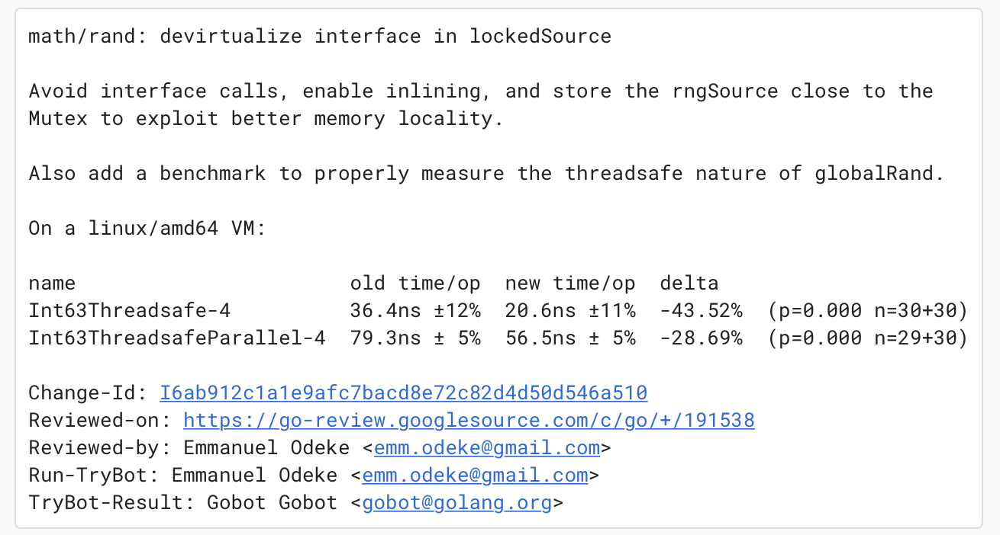
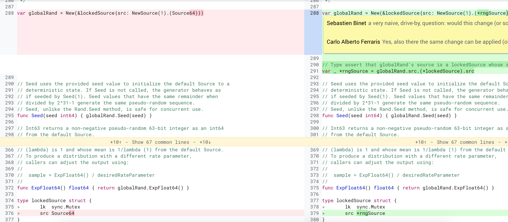

2019年的收尾之作。
Carlo Alberto Ferraris提交了一个对math/rand库中的lockedSource优化的pr(CL#191538),核心代码其实只有一行，却带来了相对的巨大的性能提升，让我们一起老看看这次的修改，学习一下代码的优化技巧，提高我们Go语言的底层优化经验。

Carlo通过避免接口调用、允许内联、保持在同一个cacheline三种方式提升rngSource的性能：

可以看到，他把lockedSource struct中的src字段从接口类型Source64改变了具体的struct指针*rngSource，这样*rngSource的方法Int64、Uint64都可以内联到调用者的代码中。
实际测试中第三个保持在同一个cacheline优化并没有起作用，反而采用指针类型性能更好一点点。我实际测试发现也发现这个优化也没有特别明显的优化效果，所以下面的测试中并没有这个优化手段。
下面我们通过一个例子🌰来比较采用这个方法前后的代码的性能，主要观察接口去掉后的性能提升和内联后的性能提升。
首先定义一个干果DryFruit的接口,它有一些通用的方法，比如名称、价格以及增加数量的方法(Increase), 因为只是做个演示，你不必深究这些方法的意义：
1 2 3 4 5 6 7 8
| type DryFruit interface { Name() string Price() uint64 Family() string Distribution() string Increase() }
|
下面我们定义一个栗子🌰对象，它实现了干果接口：
1 2 3 4 5 6 7 8 9 10 11 12 13 14 15 16 17 18 19 20 21 22 23 24 25 26 27 28 29 30
| type Chestnut struct { name string count uint64 } func (c Chestnut) Name() string { return c.name } func (c Chestnut) Price() uint64 { return 10 } func (c Chestnut) Family() string { return "Fagaceae" } func (c Chestnut) Distribution() string { return "East Asia" } func (c *Chestnut) Increase() { c.count++ }
|
接口和具体的实现都定义好了，我们需要定义一个使用它们的对象： 礼物Gift。
未优化的礼物定义如下, 定义了一个OriginGift对象，它包含一个排外锁，还包含一个干果接口字段:
1 2 3 4 5 6 7 8 9 10 11 12 13 14
| type OriginGift struct { mu sync.Mutex dryFruit DryFruit } func (g *OriginGift) Access() { g.dryFruit.Name() g.dryFruit.Price() g.dryFruit.Family() g.dryFruit.Distribution() g.dryFruit.Increase() }
|
而我们的优化的Gift struct直接把接口对象替换成具体的栗子struct:
1 2 3 4 5 6 7 8 9 10 11 12 13 14
| type ImprovedGift struct { mu sync.Mutex dryFruit *Chestnut } func (g *ImprovedGift) Access() { g.dryFruit.Name() g.dryFruit.Price() g.dryFruit.Family() g.dryFruit.Distribution() g.dryFruit.Increase() }
|
Benchmark测试代码如下：
1 2 3 4 5 6 7 8 9 10 11 12 13 14 15 16 17 18 19 20 21 22 23 24 25 26 27 28 29 30 31 32 33 34 35 36 37 38 39 40 41 42 43
| func BenchmarkOriginGift(b *testing.B) { var nut = &OriginGift{ dryFruit: &Chestnut{name: "栗子"}, } for i := 0; i < b.N; i++ { nut.Access() } } func BenchmarkImprovedGift(b *testing.B) { var nut = &ImprovedGift{ dryFruit: &Chestnut{name: "栗子"}, } for i := 0; i < b.N; i++ { nut.Access() } } func BenchmarkOriginGiftParallel(b *testing.B) { var nut = &OriginGift{ dryFruit: &Chestnut{name: "栗子"}, } b.RunParallel(func(pb *testing.PB) { for pb.Next() { nut.mu.Lock() nut.Access() nut.mu.Unlock() } }) } func BenchmarkImprovedGiftParallel(b *testing.B) { var nut = &ImprovedGift{ dryFruit: &Chestnut{name: "栗子"}, } b.RunParallel(func(pb *testing.PB) { for pb.Next() { nut.mu.Lock() nut.Access() nut.mu.Unlock() } }) }
|
同时测试无并发的benchmark, 然后测试并发访问时的性能。
第一次测试我们采用禁止内联的方式， 运行go test -gcflags "-N -l" -bench .:
1 2 3 4 5 6 7
| goos: darwin goarch: amd64 pkg: github.com/smallnest/study/perf_interface BenchmarkOriginGift-4 34669898 31.0 ns/op BenchmarkImprovedGift-4 58661895 17.9 ns/op BenchmarkOriginGiftParallel-4 7292043 171 ns/op BenchmarkImprovedGiftParallel-4 8718816 143 ns/op
|
可以看到将接口替换成具体的struct优化还是很明显的，非并发访问的情况下耗时几乎降到了一半，并发访问也有可观的性嫩提升。
第二次我们启用内联，看看和上面不启用内联的情况比较。
1 2 3 4 5 6
| goarch: amd64 pkg: github.com/smallnest/study/perf_interface BenchmarkOriginGift-4 95278143 12.6 ns/op BenchmarkImprovedGift-4 549471100 2.16 ns/op BenchmarkOriginGiftParallel-4 11631438 115 ns/op BenchmarkImprovedGiftParallel-4 13815229 86.3 ns/op
|
启用内联后，可以看到性能都有所提升，而去掉接口的方式性能优化更明显，直接降到了2.16 ns/op。
通过这两个benchmark的比较，你应该能深刻理解到这两种优化手段(去接口、内联)带来的巨大收益吧。
你可以通过 go test --gcflags "-m -m" -bench . 了解内联的具体细节。